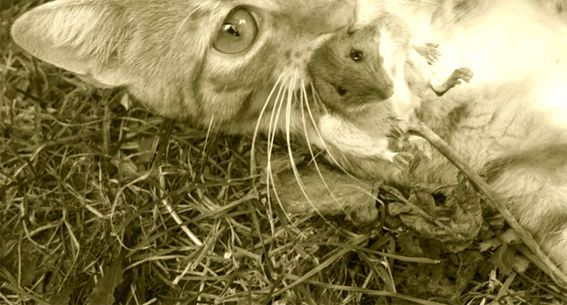
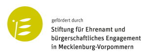
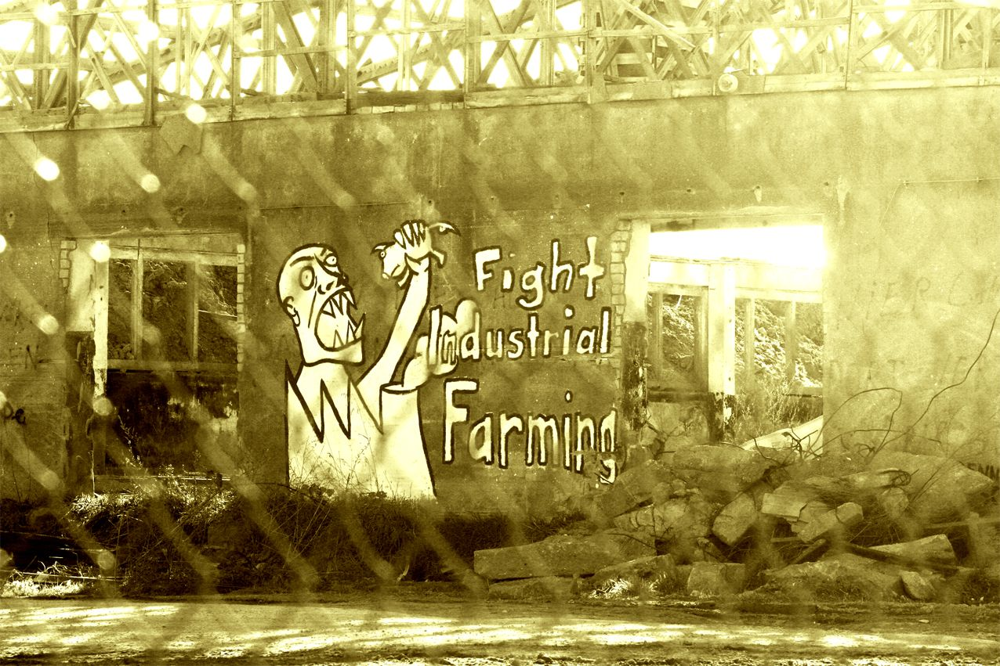

Sinn & Form

Überleben außerhalb urbaner Ballungszentren wird täglich schwieriger
nicht nur in der weiten Welt, wo es existenzielle Fluchtgründe gibt.
Selbst im schönen Gesundheitsland MV, wo die Agrarindustrie zu Hause ist.
Auch hier entsteht deutscher Druck auf die Welt
und Widerstand dagegen.
Mit der Installation der gewaltigen Ferkel - u. Güllefabrik am Tollensetal begann die Auseinandersetzung mit der Agrarindustrie.
mensch-und-land.de zeigt eine kleine überschaubare Region am TOLLENSETAL zum Verständnis für globale Zusammenhänge.
- Wir empfehlen eine assoziative Annäherung an diese Problematik mittels Schlagwortwolke, selbst hier und anderswo.
Sie führt in jedem Fall zu allen Quellen
in der TOLLENSETALER STIMME:
Die Gesamtausgabe der vergangenen Jahre ist im Archiv abrufbar.
Per konstruktiver Suche können Themen hier konkret angesteuert werden.
Auch Heimat, Umwelt, Kultur und Agrar gehören zum TOLLENSETAL.
Oberhalb der einzelnen Seiten sind thematische Kacheln,
die auf Untergliederungen oder auf ganz andere Seiten führen.
Das Überleben außerhalb urbaner Ballungszentren kann so vielfältig betrachtet werden.
Der Blick zurück in den MASTERPLANprozess zur Entwicklung des ländlichen Raumes lohnt sich.
mensch-und-land.de kann in diesem Sinne einen sinnvollen Beitrag zur Desillusionierung leisten.
Wir laden Euch dazu ein, mit uns Ansätze für eine bessere schöne neue Welt zu suchen.
Wir freuen uns auf ein interessantes Zusammenspiel.
"... Aus der Mitte der Gesellschaft entsteht so gemeinsam "Mensch und Land", ein Leitbild für Mecklenburg-Vorpommern.“
Ein Leitbild aus der Peripherie wäre doch auch mal ganz nett...

Grüsse vom Tollensetal

und hier ist unsere alte Präsenz in der Welt neben mensch-und-land.de zu finden: https://tollensetaler.blogger.de/